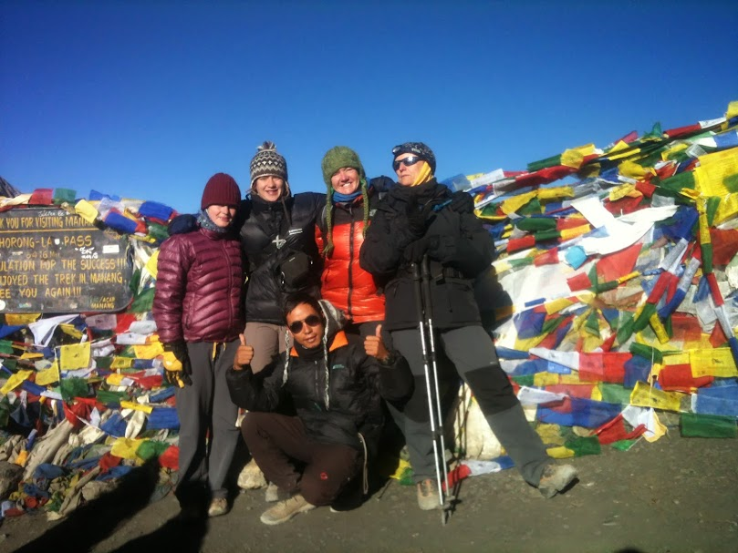
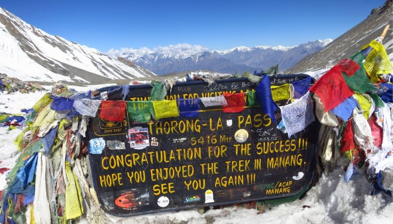
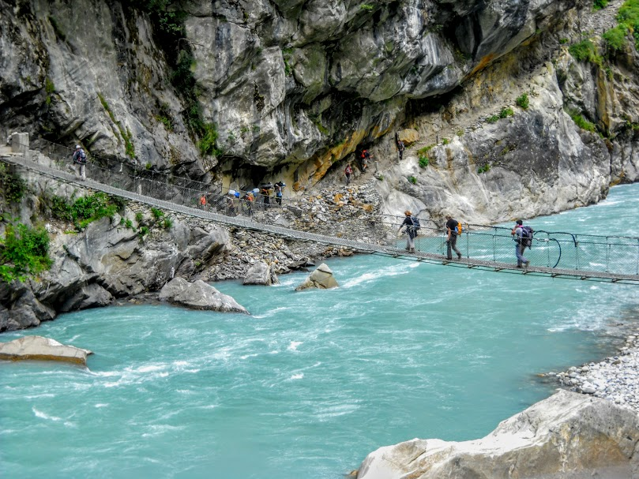
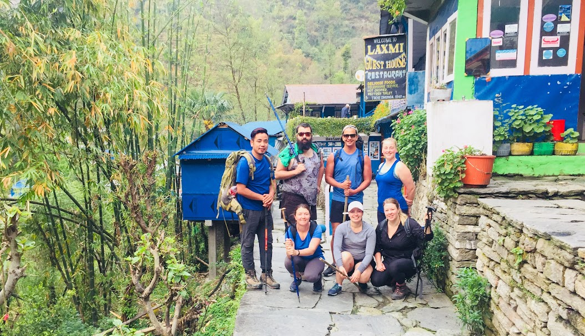
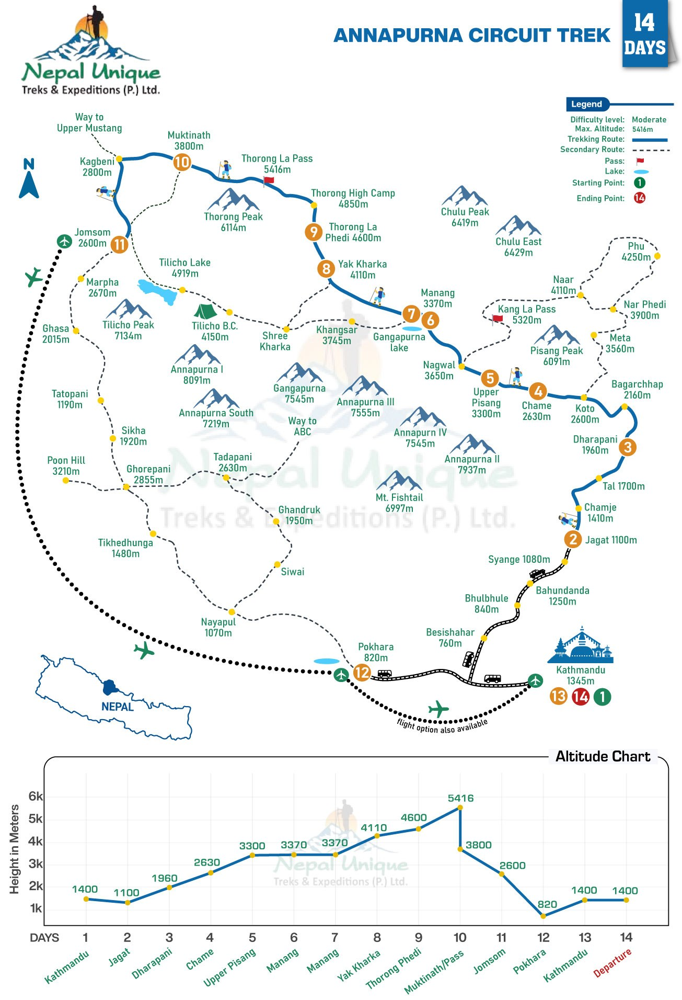

Annapurna Circuit Trek
The Annapurna Circuit Trek is one of Nepal’s most legendary trekking experiences, offering a complete Himalayan journey through changing landscapes, rich cultures, and breathtaking mountain scenery. From lush green valleys and terraced farmlands to high alpine terrain and the dramatic crossing of Thorong La Pass at 5,416 meters, every day on the trail brings a new experience.





Key Trip Facts
Trek Overview
Trip Highlights
Annapurna Circuit Trek Introduction
The Annapurna Circuit Trek is a 14-day Himalayan trekking adventure in Nepal that takes you from the lower Marsyangdi Valley through Manang and across the spectacular Thorong La Pass at 5,416 meters before descending to Muktinath and Jomsom. The route combines dramatic mountain scenery, diverse landscapes, traditional villages and Himalayan cultures in one of Nepal's classic long-distance treks.
This Annapurna Circuit Trek itinerary is designed for travelers looking for a well-organized tea-house trek with experienced local guides, comfortable accommodation and carefully planned acclimatization. Along the route, you will experience changing landscapes from subtropical valleys and forests to high-altitude alpine terrain, while enjoying views of the Annapurna, Dhaulagiri and Manaslu ranges.
Below you will find the complete itinerary, Annapurna Circuit Trek cost, permits, accommodation, meals, difficulty, best time to trek, packing information and frequently asked questions.
Annapurna Circuit Trek Overview
The Annapurna Circuit Trek is one of Nepal’s most legendary trekking experiences, offering a complete Himalayan journey through changing landscapes, rich cultures, and breathtaking mountain scenery. From lush green valleys and terraced farmlands to high alpine terrain and the dramatic crossing of Thorong La Pass at 5,416 meters, every day on the trail brings a new experience. This iconic trek circles the massive Annapurna Region Trek and gives travelers a chance to witness snow-covered peaks, ancient villages, Buddhist culture, and some of the most spectacular mountain views in the world.
Unlike shorter trekking routes, the Annapurna Circuit Trek combines natural beauty, adventure, and cultural immersion into one unforgettable journey. Trekkers pass through traditional Gurung, Thakali, and Tibetan-influenced villages where local hospitality creates meaningful connections. Along the route, you can admire stunning views of Annapurna, Dhaulagiri, Manaslu, and other Himalayan giants while exploring monasteries, prayer flags, and authentic mountain lifestyles.
One of the major highlights of the trek is crossing Thorong La Pass Trek, one of Nepal's highest trekking passes. Reaching the top is both a challenge and an achievement, rewarding trekkers with panoramic Himalayan scenery and a sense of accomplishment that remains for a lifetime. The route also includes the sacred pilgrimage site of Muktinath, a place respected by both Hindu and Buddhist communities.
Today, the Annapurna Circuit remains a top choice for trekkers seeking a complete Himalayan experience. Whether you are an experienced hiker or a passionate traveler seeking your next adventure, this trek offers incredible landscapes, diverse cultures, and unforgettable memories.
Why Trek the Annapurna Circuit with Nepal Unique Treks?
The Annapurna Circuit Trek is considered one of Nepal’s most rewarding trekking adventures because it offers an incredible combination of natural beauty, cultural experiences, and Himalayan challenges in a single journey. Unlike many trekking routes that follow a similar landscape from start to finish, the Annapurna Circuit constantly changes, making every day feel unique and exciting.
One of the biggest reasons travelers choose the Annapurna Circuit Trek is its remarkably diverse landscapes. The trail begins through lush green hills, terraced farmland, waterfalls, and river valleys before gradually ascending into pine forests, rocky cliffs, alpine meadows, and dry high-altitude terrain influenced by Tibetan geography. This dramatic transformation of scenery creates a trekking experience unlike any other in Nepal.
The trek also provides rich cultural experiences through traditional villages inhabited by Gurung, Manangi, and Thakali communities. Trekkers have the opportunity to experience authentic mountain lifestyles, visit ancient monasteries, observe colorful prayer flags, and learn about local customs shaped by both Buddhist and Hindu traditions. The warm hospitality of local people adds a deeper connection to the journey.
Another major highlight is crossing the world-famous Thorong La Pass at 5,416 meters, one of Nepal's highest trekking passes. Reaching the summit is both physically challenging and emotionally rewarding, offering breathtaking panoramic views of the Himalayan range.
Compared to other trekking routes, the Annapurna Circuit feels less repetitive because the scenery, culture, and landscapes constantly change along the trail. Comfortable tea houses throughout the route provide cozy accommodation, warm meals, and opportunities to rest after each trekking day.
For photographers and adventure travelers, the Annapurna Circuit Trek is a dream destination. From snow-covered mountains and dramatic landscapes to traditional villages and stunning sunrise views, every section of the journey offers unforgettable moments and incredible photography opportunities.
Annapurna Circuit Trek Route
The Annapurna Circuit Trek route begins from Kathmandu and drives through scenic countryside to Besisahar, the gateway of the Annapurna region. The trail gradually ascends through charming mountain villages like Taal, Timang, Chame, and Pisang, where trekkers experience stunning views of Annapurna II and surrounding peaks. As the journey continues to Manang, the landscape becomes more alpine and culturally Tibetan-influenced. After proper acclimatization, the route leads to Yak Kharka and Thorong Phedi before crossing the challenging Thorong La Pass. From there, the trail descends to the sacred Muktinath, continues to Jomsom, and finally ends with a beautiful drive or flight to Pokhara.
Annapurna Circuit Trek Difficulty
The Annapurna Circuit is generally rated moderate to challenging. It needs no technical climbing skills, but it is long, high, and demanding on the body. The hardest parts are the altitude and the single big pass day, not the terrain.
Moderate to challenging
Most days are on well-maintained teahouse trails with steady ups and downs. The difficulty comes from the cumulative effect of 2+ weeks of walking, cold at elevation, basic facilities, and the thin air near the pass. Healthy, prepared people of many ages complete it, but it is not a casual walk.
Highest point: 5,416m
This is Thorong La Pass, one of the highest trekking passes in the world. At this height there is roughly half the oxygen available at sea level, so even normal walking feels hard. Nearly all the difficulty of the trek is concentrated in the days around this point.
Typical walking hours
Most days are 5-7 hours of walking, with stops for tea and lunch. Early days at lower elevation can feel long and hot, while days above 3,500m are often shorter by design to aid acclimatization.
Longest day
Thorong Phedi or High Camp to Muktinath is the longest and hardest day, typically 7-10 hours. You start around 3-5 a.m. to cross before the afternoon winds.
Altitude gain
- Overall, the route climbs from around 800-1,800m (depending on your start point) to 5,416m.
- The main pass day is roughly 950-1,000m of ascent from Thorong Phedi (about 4,450m) or less from High Camp (about 4,800m).
- It is followed by a steep descent of about 1,650m to Muktinath (3,760m), which is hard on the knees.
Thorong La crossing
- Start in the dark, with headlamps, in temperatures that can reach -10°C to -20°C.
- The climb takes about 4-5 hours, and the descent 3-4 hours.
- Winds typically rise by mid-morning, and snow or ice can close or complicate the pass.
- There is almost no shelter on the pass, so cold management (layers, gloves, insulated water) matters.
Fitness requirements
You do not need to be an athlete, but you should be in good cardiovascular shape and able to walk 5-7 hours a day with a light pack for many days in a row. Good preparation includes 8-12 weeks of hiking, stair work, or cardio, plus leg strength for the long descents. Fitness helps you cope, but it does not protect you from altitude sickness.
Previous trekking experience
Not strictly required, since there is no technical climbing and the trail is well established. However, prior multi-day hiking, ideally with some time above 3,000m, is a real advantage. First-timers can do it if they go slowly, allow extra days, and consider a guide.
Acclimatization
This is the key to success. Standard guidance:
- Above about 3,000m, increase your sleeping altitude by no more than 300-500m per night.
- Take a rest or acclimatization day every 1,000m or so. On this route, Manang (about 3,540m) is the classic stop, with a day hike to Gangapurna Lake or Ice Lake.
- "Climb high, sleep low" on rest days.
- Drink plenty of fluids, avoid alcohol, and don't rush.
Altitude sickness
Acute mountain sickness (AMS) is the main risk.
Mild AMS: headache, nausea, poor sleep, fatigue, dizziness. Stop ascending and rest.
- Danger signs: worsening headache, vomiting, loss of coordination, confusion, breathlessness at rest, or a wet cough. These can indicate HACE (brain swelling) or HAPE (fluid in the lungs), which are emergencies.
- The rule is to descend immediately if symptoms worsen, even at night.
- Some trekkers take acetazolamide (Diamox) as a preventive, but talk to a doctor before the trip. Travel insurance that covers helicopter evacuation above 4,000-5,000m is strongly advised.
I'm not a medical professional, so please check with a doctor about fitness and medication before going.
Best Season: March - May and September - November
Choosing the right season plays a major role in the success and enjoyment of the Annapurna Circuit Trek. Weather conditions, mountain visibility, trail quality, and trekking experience can vary greatly throughout the year. Each season offers a unique perspective of the Himalayas, allowing trekkers to choose the experience that best matches their expectations.
Spring (March - May)
Spring is one of the most popular seasons for the Annapurna Circuit Trek. During this period, the trails come alive with colorful rhododendron forests, blooming wildflowers, and lush green hillsides. Weather conditions are generally stable, temperatures are comfortable, and the skies often provide stunning mountain views of Annapurna, Dhaulagiri, and surrounding peaks. The pleasant climate and natural beauty make spring ideal for photographers and nature lovers.
Autumn (September - November)
Autumn is widely considered the best time for the Annapurna Circuit Trek. After the monsoon season clears dust and pollution from the atmosphere, trekkers enjoy crystal-clear skies and excellent visibility. The weather remains stable with dry trails and comfortable temperatures, creating ideal trekking conditions. This season also coincides with major Nepalese festivals, adding cultural experiences along the route.
Winter (December - February)
Winter offers a quieter trekking experience with fewer trekkers on the trails. Snow-covered landscapes create breathtaking Himalayan scenery and a peaceful atmosphere. However, temperatures can drop significantly at higher elevations, and heavy snowfall near Thorong La Pass may occasionally affect route accessibility.
Monsoon (June - August)
Monsoon season brings frequent rainfall, cloudy weather, and increased humidity. Lower sections of the trail become greener and less crowded, but trekkers should be prepared for slippery paths, leeches, and potential landslide possibilities in some areas. Mountain views may also be limited due to clouds and rain. Despite the challenges, adventurous trekkers can still enjoy a unique experience during this season.
Annapurna Circuit Trek Itinerary: Day by Day
14 Days program for Annapurna Circuit Trek. Daily timings and sequences remain flexible according to weather, flight operations, and group pace.
Day 1: Arrive at Tribhuvan International Airport, Kathmandu
Approx. 1,400 m / 4,593 ft
Your Annapurna Circuit Trek adventure begins upon arrival at Kathmandu’s international airport. Our representative from Nepal Unique Treks will welcome you and transfer you to your hotel. After checking into the hotel in Thamel, it will depend on your arrival time; you can explore the local streets or relax after your journey. In the evening, a trek briefing introduces you to the upcoming adventure, route details, and preparation for the unforgettable Himalayan journey ahead.
Day 2: Drive from Kathmandu to Jagat (1,100m) – Distance: 186 km | Duration: 8 Hours
Approx. 1,100 m / 3,609 ft
After breakfast, begin a scenic drive from Kathmandu toward Jagat. The journey follows winding mountain roads, terraced farmland, rivers, and traditional villages. As you leave the city behind, landscapes gradually transform into rolling hills and dramatic valleys. Passing through Besisahar and several small settlements provides a glimpse into rural Nepalese life. Jagat is a charming village and the gateway to the Annapurna region, where your trekking adventure officially begins.
Day 3: Jagat to Dharapani (1,960m) – Distance: 12–14 km | Duration: 6 Hours
Approx. 1,960 m / 6,430 ft
Today’s trail follows beautiful river valleys and traditional stone pathways. Trek through lush forests, suspension bridges, waterfalls, and charming settlements inhabited by diverse ethnic communities. The route slowly gains elevation while offering excellent scenery of hills and distant snow-covered peaks. As you reach Dharapani, you enter a culturally rich region influenced by Tibetan traditions and mountain lifestyles.
Day 4: Dharapani to Chame (2,630m) – Distance: 15–16 km | Duration: 5 Hours
Approx. 2,630 m / 8,629 ft
The trail continues through pine and fir forests with incredible views of the surrounding mountains. As the landscape changes, you begin noticing stronger Himalayan influences in architecture and local culture. Chame, the district headquarters of Manang, welcomes trekkers with spectacular views of Annapurna and Lamjung Himal. Natural hot springs nearby provide a relaxing opportunity after the day's trek.
Day 5: Chame to Pisang (3,300m/10,825ft) – Distance: 14–15 km | Duration: 6 Hours
Approx. 3,300 m / 10,827 ft
Today's journey features one of the most scenic sections of the Annapurna Circuit Trek. Walk through forests and narrow valleys while enjoying breathtaking mountain scenery. Massive cliffs and dramatic landscapes surround the trail. Upon reaching Pisang, trekkers are rewarded with stunning views of Annapurna II and picturesque mountain settlements influenced by Tibetan culture.
Day 6: Pisang to Manang (3,370m/11,710ft) – Distance: 16 km | Duration: 7 Hours
Approx. 3,370 m / 11,056 ft
The trail toward Manang offers unforgettable views of snow-covered Himalayan peaks and traditional villages. Trekkers can choose between lower and upper routes, with the upper trail providing better scenery and cultural experiences. Manang is one of the most important villages along the circuit and serves as a key acclimatization point before entering higher elevations.
Day 7: Manang – Acclimatization Day | Distance: 16 km | Duration: 2–3 Hours
Approx. 3,370 m / 11,056 ft
Acclimatization is essential for a successful high-altitude trek. Rather than complete rest, trekkers take a short hike to higher viewpoints surrounding Manang before returning for the night. This process helps the body adapt to thinner air and reduces altitude sickness risk. Explore local bakeries, monasteries, and enjoy panoramic Himalayan views while resting for upcoming challenges.
Day 8: Manang to Yak Kharka (4,110m/13,480ft) – Duration: 4 Hours
Approx. 4,110 m / 13,484 ft
Today, the terrain becomes drier and more rugged as you move into higher alpine landscapes. Trees gradually disappear and are replaced by grasslands and rocky hillsides. The trail climbs steadily while providing incredible mountain views and a stronger sense of entering the remote Himalayan wilderness. Yak Kharka is a peaceful grazing area used by local yak herders.
Day 9: Yak Kharka to Thorong Phedi (4,600m) – Duration: 4 Hours
Approx. 4,600 m / 15,092 ft
The journey today is shorter but important for altitude adjustment. Trek across narrow trails and high mountain terrain while gradually ascending toward Thorong Phedi, the final stop before crossing the famous Thorong La Pass. The surrounding scenery becomes increasingly dramatic with barren landscapes and towering mountain walls.
Day 10: Thorong Phedi to Muktinath (3,800m) via Thorong La Pass (5,416m) – Duration: 7–8 Hours
Approx. 5,416 m / 17,769 ft
Today is the most challenging and rewarding day of the Annapurna Circuit Trek. Start early to cross Thorong La Pass, one of the world's highest trekking passes. Reaching the summit rewards trekkers with breathtaking Himalayan views and an incredible sense of achievement. After celebrating at the top, descend toward Muktinath, a sacred pilgrimage site important to both Hindus and Buddhists.
Day 11: Muktinath to Jomsom (2,600m) – Distance: 16.5 km | Duration: 5 Hours
Approx. 2,610 m / 8,563 ft
Leaving Muktinath behind, the trail descends into the Mustang region's unique landscapes. Trek through dry valleys, ancient settlements, and windy trails shaped by Himalayan geography. Jomsom, located beside the Kali Gandaki River, is a lively town famous for apple orchards and spectacular mountain scenery.
Day 12: Jomsom to Pokhara by Flight – Duration: 20 Minutes
Approx. 810 m / 2,657 ft
Enjoy a short but scenic mountain flight from Jomsom to Pokhara. During the flight, breathtaking views of the Himalayan ranges and deep valleys create memorable experiences. Upon arrival, relax beside the beautiful lakeside city of Pokhara. Spend the day exploring cafés, shops, or enjoying views around Phewa Lake.
Day 13: Drive Back to Kathmandu – Duration: 6–7 Hours
Approx. 1,400 m / 4,593 ft
After breakfast, drive back to Kathmandu through scenic hills, rivers, and countryside landscapes. The return journey provides another opportunity to appreciate Nepal’s diverse beauty. Upon arrival, enjoy free time for shopping, sightseeing, or celebrating the completion of your Annapurna Circuit adventure.
Day 14: Departure from Kathmandu Nepal 1400 m
Approx. 1,400 m / 4,593 ft
Your unforgettable Annapurna Circuit Trek comes to an end today. Depending on your flight schedule, transfer to Tribhuvan International Airport for your departure. Leave Nepal with incredible memories, Himalayan experiences, and stories from one of the world's most spectacular trekking journeys.
What is Included (Annapurna Circuit Trek Cost 2026/27 Package)
What is Excluded
Booking Dates & Availability
Packing List for Annapurna Circuit Trek
Essential Info: Down jackets and sleeping bags can be rented/arranged per package inclusions.High-Altitude Trail Gear (6 items)
Cold-Weather Layering System (5 items)
Sleep, Health & Permits (3 items)
Read before you book: Annapurna Circuit Trek
Practical logistics derived directly from this package's route facts, inclusions, and elevation profile.
Accommodation & Meals (Hotel, Lodge and Teahouse)
Accommodation follows the package grade (Hotel, Lodge and Teahouse) in Kathmandu and along the Annapurna route. Check your package Includes section for included meals and Kathmandu hotel nights.
Permits & Local Logistics
Transportation is arranged via Flight, Car and Tourist Bus. Applicable permits listed in the package inclusions are arranged by Nepal Unique Treks prior to departure.
Route Difficulty & Elevation (5416 m)
Annapurna Circuit Trek is rated Moderate to Challenging with a maximum elevation of 5416 m. Follow your guide's pacing and stay hydrated throughout the 14 Days itinerary.
Best Time to Visit (Spring and Autumn)
Recommended operating season on the source page: Spring and Autumn.
Altitude Profile of Annapurna Circuit Trek
Weather on Annapurna Circuit Trek
Annapurna Circuit Trek Route Map

Book This Trek
Contact our Kathmandu coordinators using the booking panel for private or fixed-group departures.
Trip Feedback
Explore verified traveller stories or leave feedback on Nepal Unique Treks.
Visit Nepal Unique Treks